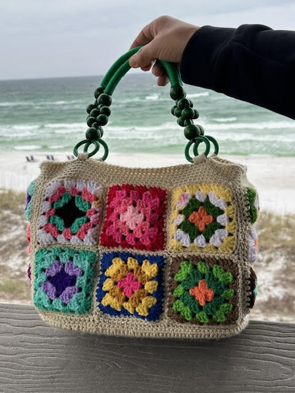
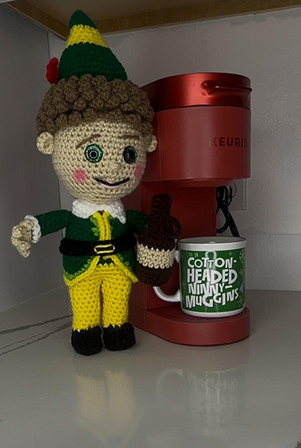

"Martian Fibers" is a logo I designed, brought to life with a hand-crafted plushie inspired by it. I freestyle-crocheted the character to match the logo — the arms look like crochet hooks, and the antennas are shaped like a treble crochet pattern emblem. I also screen-printed the canvas bag.

